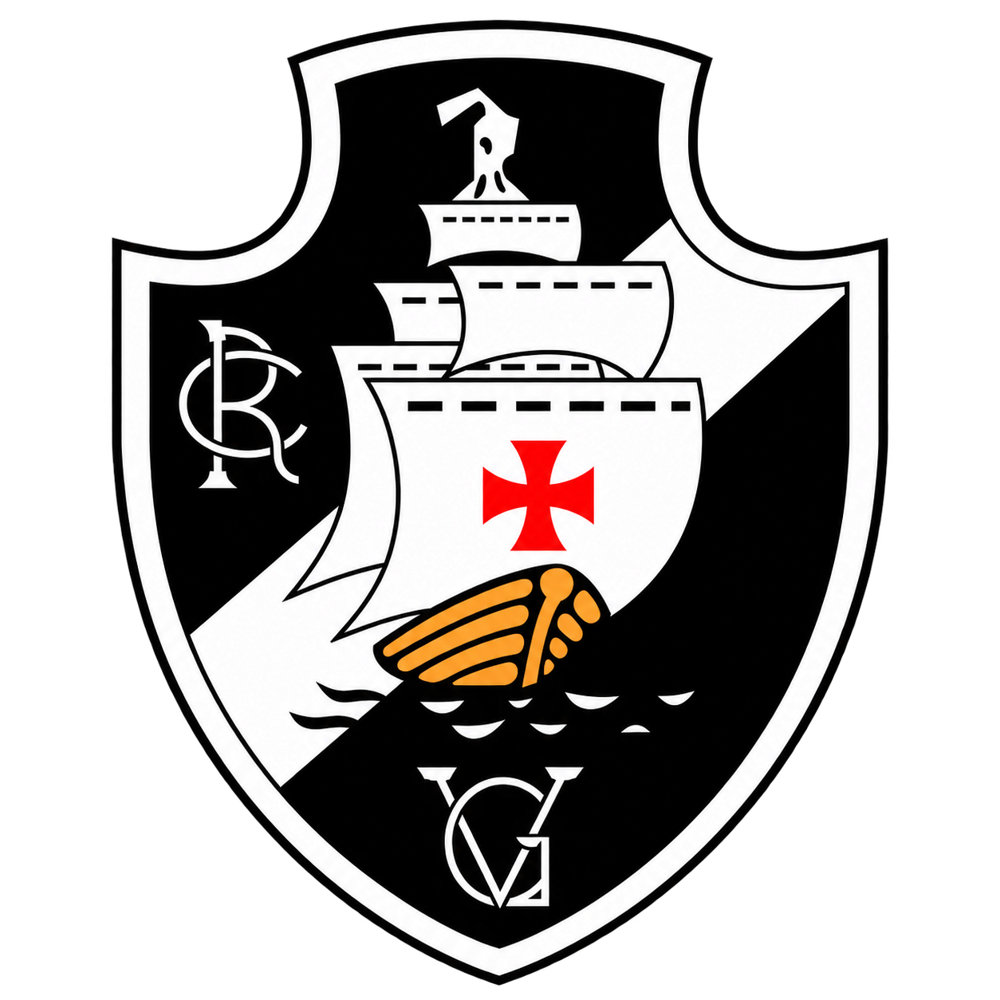

Fundado em 21 de agosto de 1898 por um grupo de remadores, o Club de Regatas Vasco da Gama é um dos clubes mais tradicionais e vitoriosos do futebol brasileiro. O Gigante da Colina marcou a história do esporte no país ao ser um dos pioneiros na inclusão de jogadores negros e de camadas populares no futebol na década de 1920, luta imortalizada na famosa "Resposta Histórica" de 1924. Seu estádio, São Januário, construído com o apoio dos próprios torcedores e inaugurado em 1927, permanece como um verdadeiro templo do futebol brasileiro.
| Clube | Fundação | Cidade |
|---|---|---|
| CR Vasco da Gama | 1898 | Rio de Janeiro |
Hino Oficial do Club de Regatas Vasco da Gama.